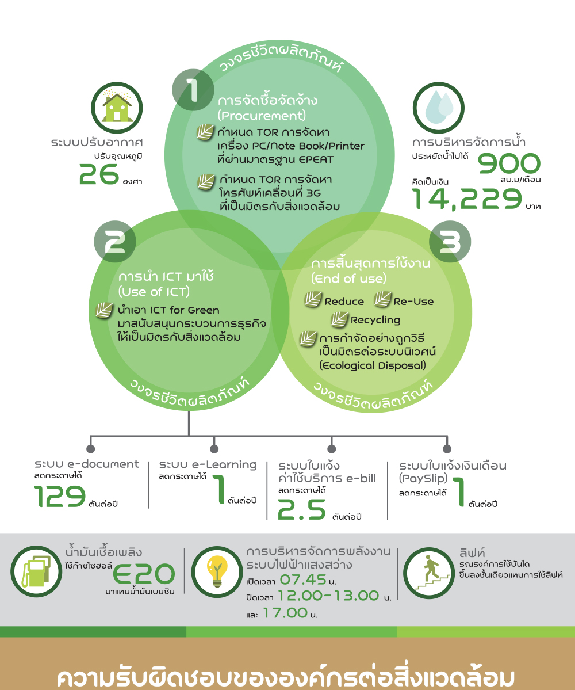

Green Computing (ระบบประมวลผลรักษ์สิ่งแวดล้อม)
Green Computing เป็นการศึกษาถึงแนวทางในการปฏิบัติ เพื่อให้มีการใช้งานทรัพยากรของระบบประมวลผลให้ได้ประสิทธิภาพอย่างคุ้มค่าที่สุด เมื่อเทียบกับพลังงานไฟฟ้า และวัสดุต่างๆ ที่ต้องใช้งานไป โดยแนวทางในการใช้งานเทคโนโลยีและผลิตภัณฑ์ทางด้านการประมวลผลที่ดำเนินการไปตามแนวทางของ Green Computing นั้นจะยึดหลัก 3 ประการด้วยกันที่เรียกว่า Triple Bottom Line ประกอบด้วย
1. การเจริญเติบโตทางเศรษฐกิจ (Economic viability)
2. การรับผิดชอบต่อสังคม (Social responsibility)
3. ผลกระทบต่อสิ่งแวดล้อม (Environmental Impact)